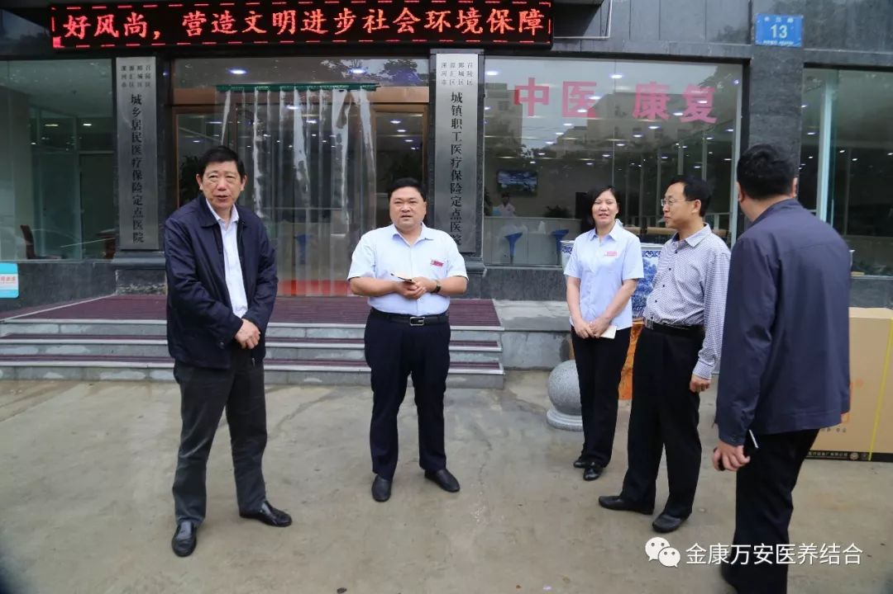
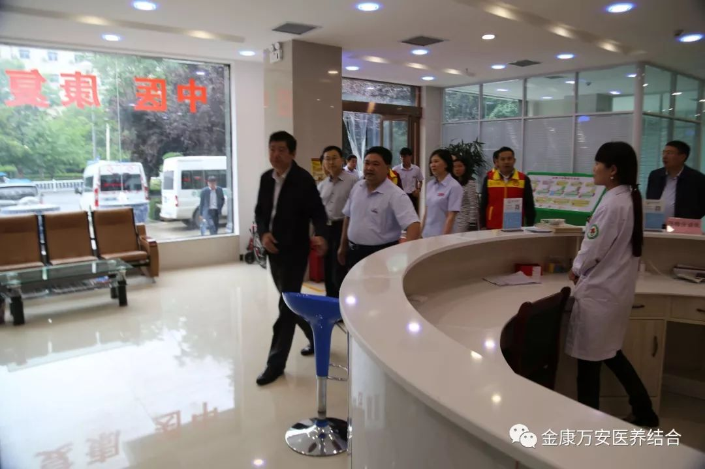
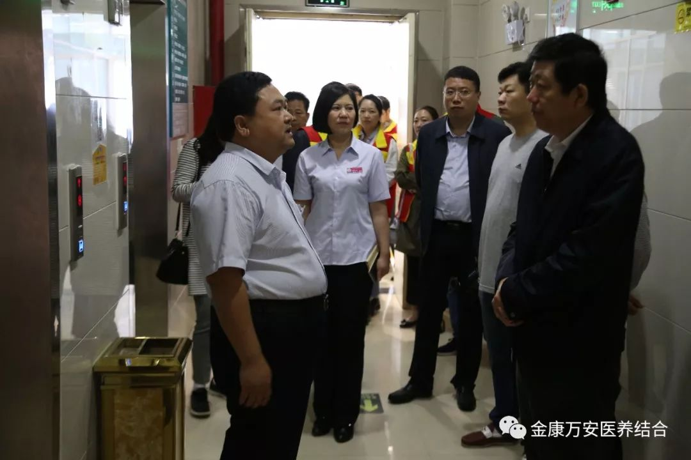
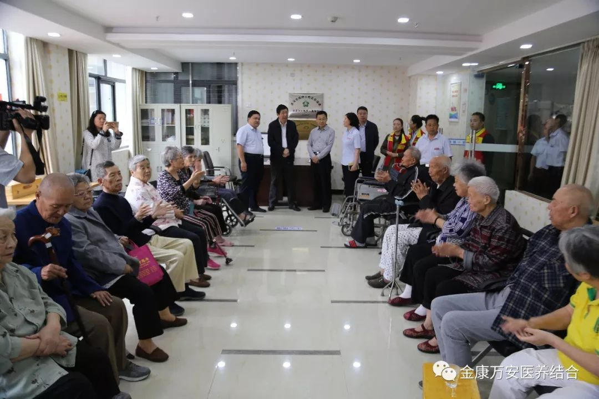
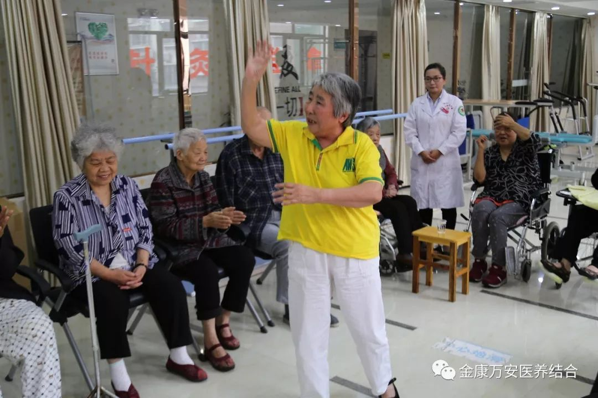
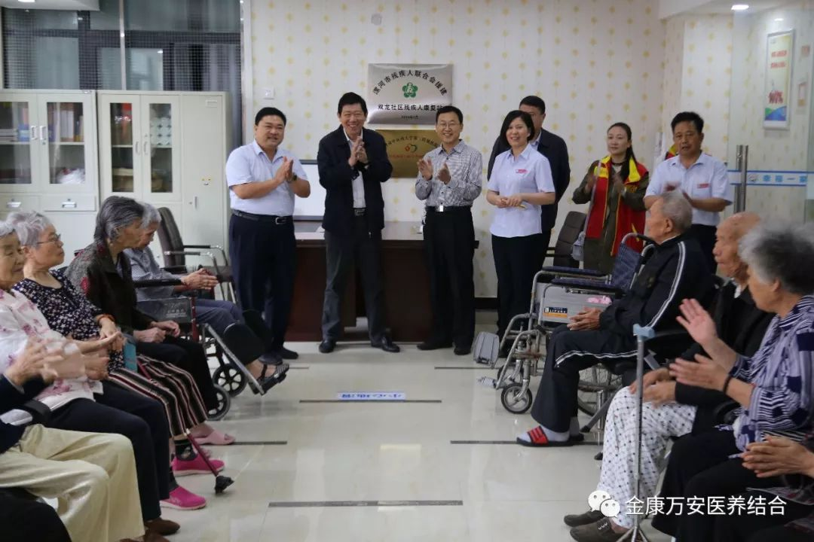
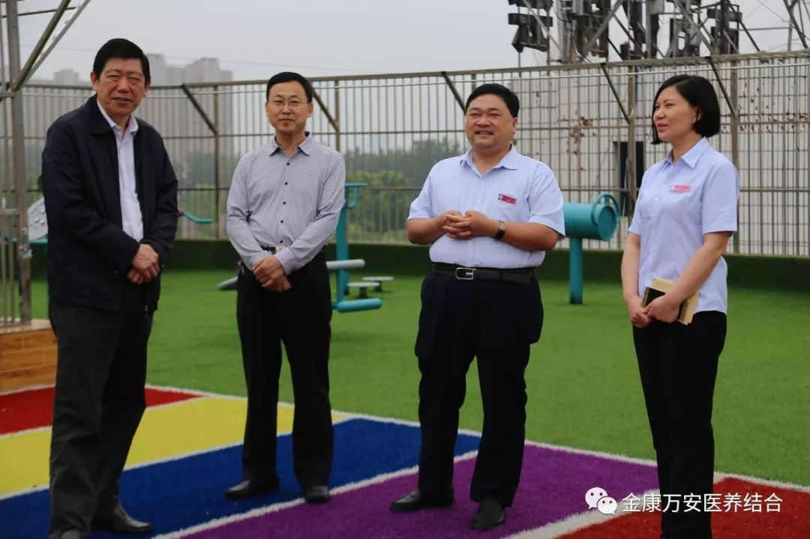
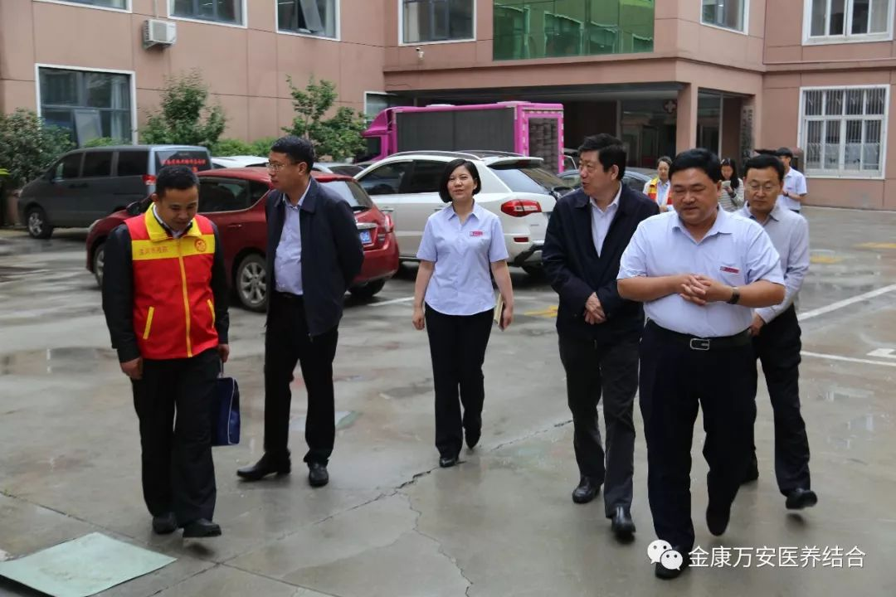

5月20日是全国第二十八次助残日，为了表示对残疾人和老人关爱，5月20日上午，漯河市副市长栗社臣、市残疾人联合会理事长高德罡来到万安老年公寓慰问老人，并送来了一万元现金和10辆轮椅等慰问品。
工作人员搬运轮椅
栗市长一行在院长王卫峰、业务院长银令令、后勤院长杨延顺的陪同下，先后了解了我院的门诊大厅、部分医疗科室、屋顶花园等，详细了解我院的建设管理等情况。当栗市长一行来到2楼康复大厅，众多老人正在开展娱乐及康复活动，栗市长一行走进活动室，王院长激动的对正在开展活动的老人说：今天是全国助残日，栗市长及市残联的领导们来看望大家了。老人们看到领导前来慰问，都非常的高兴，激动的表演起了节目，朗诵毛泽东诗词《沁园春雪》、歌唱《我是一个兵》等等，一曲曲经典的诗词及歌曲赢得了领导们的阵阵掌声。最后，栗市长表示祝大家早日康复！
参观大厅和门诊科室
栗市长认真听取王院长做相关情况介绍
走进康复大厅与老人互动
看到市领导前来慰问，老人们激动表演起了节目
老人们精彩的表演赢得了领导们的阵阵掌声
参观屋顶花园
在听取了院长王卫峰介绍我院目前的发展状况及“医养结合”这一服务特色后，栗市长及各位领导对我院医养结合工作表示肯定。
近年来，省市各级领导先后来万安老年公寓走访慰问，对老人们的居住环境、生活质量及服务理念表示认可。万安老年公寓将牢记各级领导和社会各届的重托，继续为老人们提供最优质的服务，让老人们住的舒心，让子女们放心。